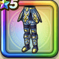

雷轟のよろい下
攻略班 6.5点 / 麻痺耐性+5%呪い耐性+5%麻痺耐性+5%デイン属性斬撃・体技ダメージ+3%
くわしい特徴
【レベル別習得スキル】 Lv1麻痺耐性+5% Lv8呪い耐性+5% Lv10さいだいMP+5 Lv15デイン属性斬撃・体技ダメージ+3% Lv18麻痺耐性+5% Lv20【魔法戦士】さいだいMP+5 Lv23さいだいHP+5 Lv25守備力+7 【限界突破スキル】 1凸呪い耐性+5% 2凸守備力+5 3凸こうげき魔力+5 4凸さいだいHP+5